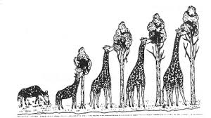

JEAN-BAPTISTE DE LAMARCK (1744-1829)
Jean-Baptiste Pierre Antoine de Monet, Chevalier de la Marck, often known simply as Lamarck, was a french naturalist. He was a soldier, biologist, academic, and an early proponent of the idea that evolution occurred and proceeded in accordance with natural laws. Lamarckism (or Lamarckian inheritance) is the idea that an organism can pass on characteristics that it acquired during its lifetime to its offspring (also kown as heritability of acquired characteristics or soft inheritance).
LAMARCKISM

It is also called "Theory of Inheritance of Acquired Characters". It is based upon the following two assumptions:
- The use & diuse of the organs: The organs of the body which are used more and more, become elongated and well developed while the parts that are not used, get weakened, become smaller and gradually diappear.
- The inheritance of acquired characters: The characteristics acquired during the life time of an individual are transmitted to next generation.